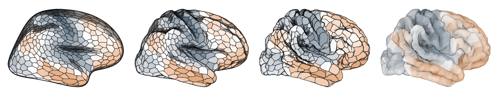
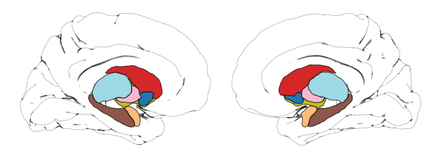

Building surface atlases
building-surface-atlases.Rmdbuild_atlas_surf() is the main surface based atlas
builder. It finds the vertices visible from each selected camera,
projects them into two dimensions, and returns region polygons together
with optional silhouettes, shading points, and a cortical glass-brain
layer (which is useful if you derive subcortical structures).
Surface projection requires Python. ggbrat declares the
needed Python packages through reticulate when the workflow
is first used.
A cortical atlas
Download an annotation and build two views:
aparc <- download_annotation("aparc")
atlas <- build_atlas_surf(
annot_path = aparc,
surface = "inflated",
interactive = TRUE,
n_views = 2,
view_names = c("lateral", "medial")
)In interactive mode, rotate the surface and click Use this
view (or press U) for each requested view. The
returned camera positions can be reused to make later builds
deterministic:
atlas_again <- build_atlas_surf(
annot_path = aparc,
surface = "inflated",
camera_positions = atlas$camera_positions,
view_names = c("lateral", "medial")
)When interactive = FALSE and no camera positions are
supplied, ggbrat uses the first n_views bundled
presets.
Blend two surfaces
An inflated surface gives clean region separation, while a pial surface retains more anatomical structure. You can blend the two. See the image below for different blend ratios.
atlas_blended <- build_atlas_surf(
annot_path = aparc,
surface = c("inflated", "pial"),
surf_blend_ratio = 0.7,
n_views = 2
)
surface_path provides the same control for explicit
FreeSurfer or GIFTI files. Supply named left and
right paths; each hemisphere can itself contain two paths
to blend.
Build a mesh from a volumetric atlas
For a labelled NIfTI atlas, first construct the 3D mesh and then
project it. Here the main parameters will be
voxel_smoothing_sigma as well as
smoothing_iterations and smoothing_factor to
get “good” looking meshes.
melbourne <- download_volume_atlas("Melbourne_S1")
mesh <- nifti_to_surface(
nifti_path = melbourne$nifti,
lookup_path = melbourne$lookup,
split_hemispheres = TRUE,
voxel_smoothing_sigma = 1.5,
smoothing_method = "laplacian",
smoothing_iterations = 25,
smoothing_factor = 0.2
)
subcortex <- build_atlas_surf(
mesh_path = mesh$output_file,
interactive = TRUE,
n_views = 2,
view_names = c("lateral", "medial")
)Generated meshes default to the user-specific ggbrat cache. I have already derived meshes for many of the subcortical atlases, but I haven’t optimised the parameters for each and every one. So it might be worth doing it again if you want really good results. But if you are okay with my half assed meshes you can skip the conversion and build directly with that:
aseg_mesh <- download_surface("aseg_subcortex", type = "subcortical")
subcortex <- build_atlas_surf(
mesh_path = aseg_mesh,
add_cortex = TRUE,
interactive = TRUE,
n_views = 1
)With add_cortex = TRUE, a transparent cortical surface
appears while choosing the camera and the returned cortex
multipoints and silhoutte can be plotted as a “glass-brain” layer.
Keep points instead of polygons
Set create_polygons = FALSE when you want the projected
region point clouds:
points <- build_atlas_surf(
mesh_path = melbourne_mesh,
create_polygons = FALSE,
keep_z_coord = TRUE,
n_views = 1
)With keep_z_coord = TRUE, these are
MULTIPOINT Z geometries. The Z value is depth in the chosen
camera projection, not the original surface-space Z. If polygons are
requested, X and Y form the polygons while multipoint layers such as
cortex retain depth.
Mesh point-data arrays
ggbrat expects the region identifier in a point-data array called
region. For an imported VTP with a differently named array,
tell the builder which one to use:
custom <- build_atlas_surf(
mesh_path = "my_mesh.vtp",
region_array = "Label"
)If no usable colour array is supplied, deterministic region colours are generated automatically.
Plot the result
ggplot(subcortex$atlas) +
geom_sf(data = subcortex$cortex, alpha = 0.04, size = 0.05) +
geom_sf(data = subcortex$cortex_silhouette, alpha = 0.5, size = 0.5) +
geom_sf(aes(fill = color), linewidth = 0.2, show.legend = FALSE) +
scale_fill_identity() +
theme_void()
See Plotting ggbrat atlases for shading, joins, overlays, and animation.